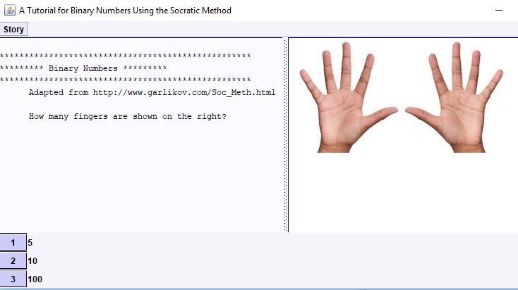

Ludlow Adventurebb4-adventure ludlowScript.xml This started as a simple text based adventure. The scenes are stored in an xml file. I thought it would be cool to have images and sounds associated with the scenes, so I added a UI. When editing the xml file got tedious, I decided to add the graphical editor. You can edit the story if you know the password. Next I may add support for keeping track of found items and hit-points. This story is based on an adventure published by James M. Ward in Dragon Magazine back in 1980. |
|
Ludlow Text Adventurebb4-text-adventure ludlowScript.xml The scenes are stored in an xml file. This story is based on an adventure published by James M. Ward in Dragon Magazine back in 1980. |
|
Binary Tutorialbb4-adventure binaryScript.xml com/barrybecker4/puzzle/adventure/stories/learnBinary/ The same framework that is used to make adventure games can also be used for pedagogical purposes. Here, the socratc method is used to teach about binary numbers. |
 |
Binary Tutorial (text version)bb4-text-adventure binaryScript.xml com/barrybecker4/puzzle/adventure/stories/learnBinary/ The same framework that is used to make adventure games can also be used for pedagogical purposes. |
|
Aikido Editorbb4-adventure techniques.xml com/barrybecker4/puzzle/adventure/stories/aikido/ The same framework that is used to make adventure games can also be used for editing aikido techniques. |

|